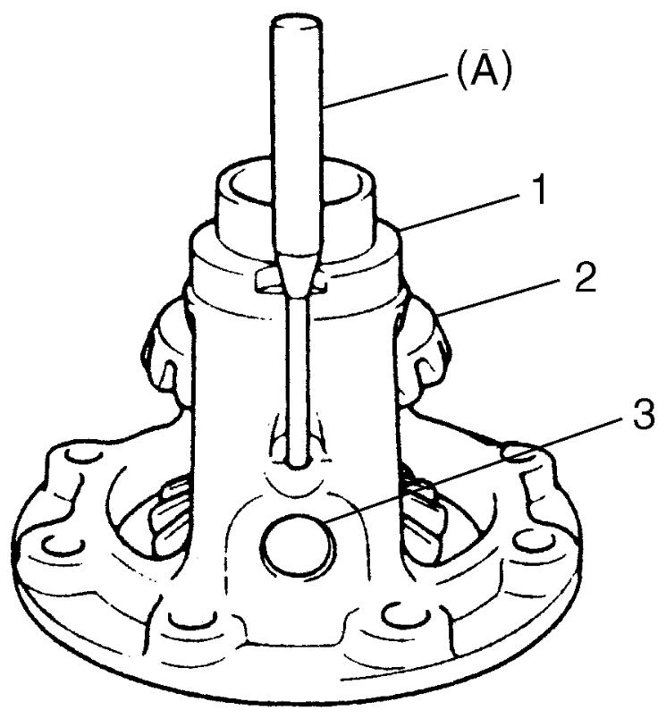
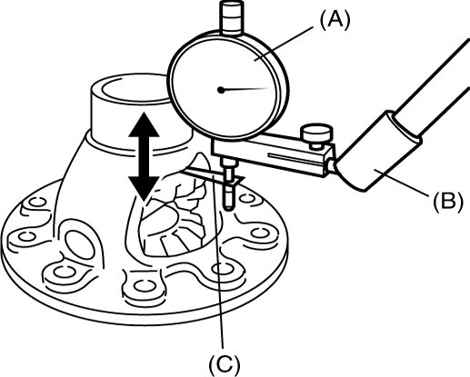
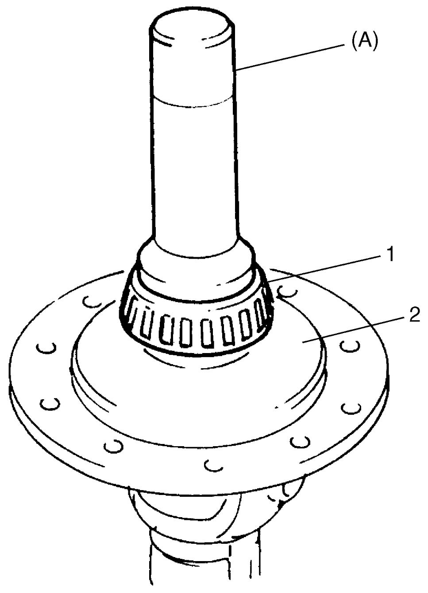
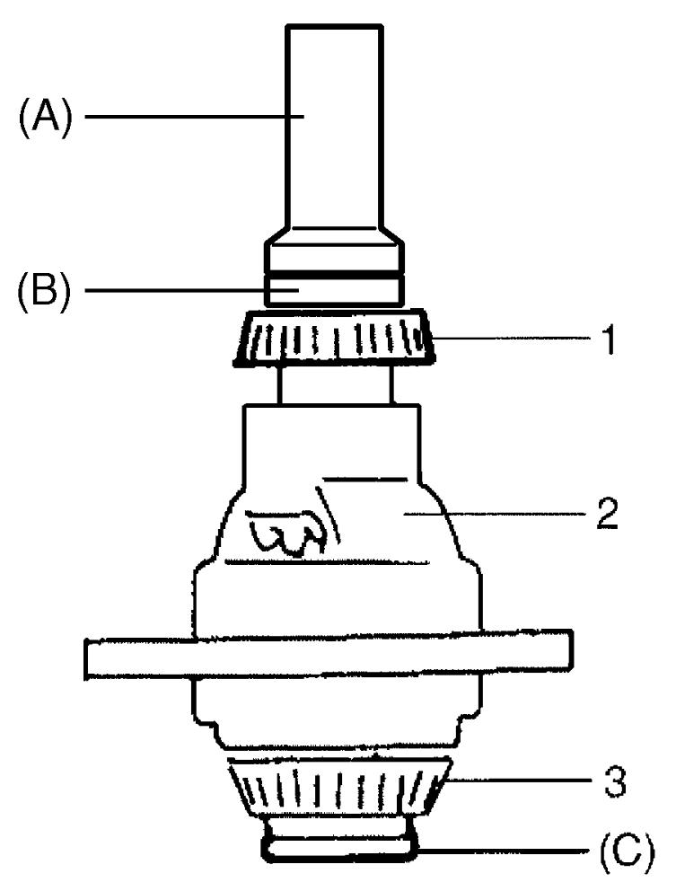
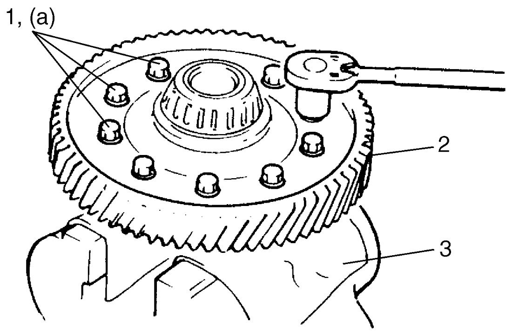

5B
| Differential Disassembly and Reassembly |
Disassembly
 "Expand image")
 "Expand image")
3)Support differential case (1) with soft jawed vise, remove final gear bolts, and then take out final gear.
4)Drive out differential pinion shaft (3) pin using special tool and hammer and then disassemble component parts.


 "Expand image")
| 2. | Differential side gear |
Reassembly
Judging from abnormality noted before disassembly and what is found through visual check of component parts after disassembly, prepare replacing parts and proceed to reassembly. Check that all parts are clean.
1)Install differential pinion, side gear and pinion shaft to differential case and measure thrust play of differential side gear as follows.
If measured value is out of specification, select suitable side gear washer from the following available sizes, install it and check again.
Differential side gear thrust play
If measured value is out of specification, select suitable side gear washer from the following available sizes, install it and check again.
Differential side gear thrust play
•Hold differential assembly with soft jawed vise and apply measuring tip of dial gauge to side gear as shown in figure.
•Move side gear up and down by hand and read dial gauge.
•Move side gear up and down by hand and read dial gauge.
Differential side gear thrust play
0.10 – 0.24 mm (0.003 – 0.009 in.)
Available side gear washer thickness
| Clearance “a” | Applicable washer |
|---|---|
| 0.720 – 0.820 mm (0.0284 – 0.0323 in.) |
0.60 mm (0.0236 in.) |
| 0.820 – 0.920 mm (0.0323 – 0.0362 in.) |
0.70 mm (0.0276 in.) |
| 0.920 – 1.020 mm (0.0362 – 0.0402 in.) |
0.80 mm (0.0315 in.) |
| 1.020 – 1.120 mm (0.0402 – 0.0441 in.) |
0.90 mm (0.0354 in.) |
| 1.120 – 1.220 mm (0.0441 – 0.0480 in.) |
1.00 mm (0.0394 in.) |

 "Expand image")
2)Drive in spring pin from right side until it becomes flush with differential case surface.
3)Press-fit left bearing (1) using special tool and hydraulic press.

 "Expand image")
| 2. | Differential case |
4)Press-fit right bearing (1) using special tools and hydraulic press.

 "Expand image")
| 2. | Differential case | 3. | Differential side left bearing |
5)Hold differential assembly with soft jawed vise (3), install final gear (2) and then tighten new final gear bolts (1).
NOTICE:
The bolts may loosen during operation of the differential if any bolts other than the specified bolts are installed.
Use only the specified bolts.

 "Expand image")